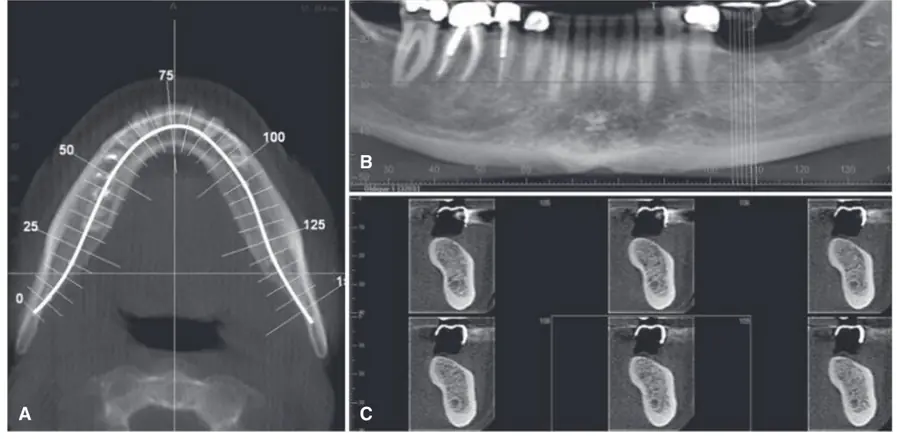
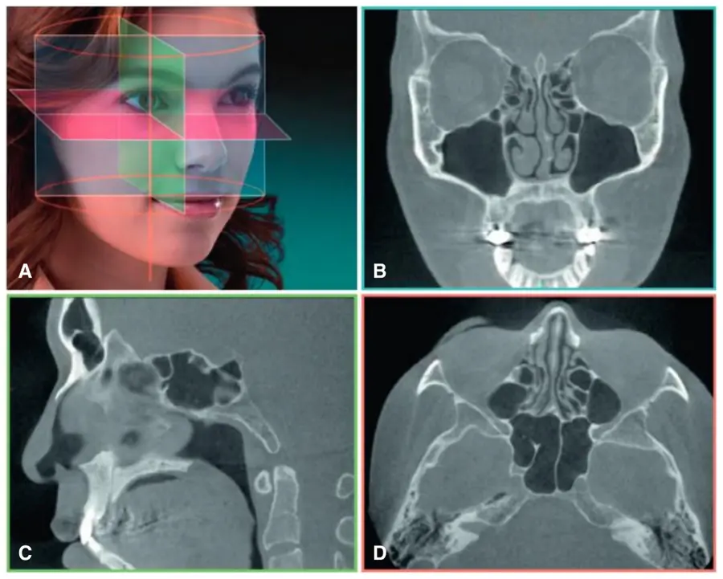

نسخه استخراجشده؛ ترجمه یا تأیید علمی انجام نشده است. وضعیت: captured
پس از اکتساب دادهی تضعیف، یک زنجیرهی ریاضی آن را به تصویر تبدیل میکند. گامبهگام:

۱) تبدیل رادون — نامگرفته از ریاضیدان یوهان رادون. دادهی ثبتشده «جذب فوتون در طول یک مسیر پروجکشن پرتو» را نشان میدهد؛ و تبدیل رادون «انتگرالهای خطی شدت پرتو را در مسیرهای مختلف تا آشکارساز، در هر زاویهی پروجکشن محاسبه میکند».
۲) سینوگرام — خروجی تبدیل رادون: «یک نمودار دوبعدی از زاویهی چرخش منبع روی محور x و موقعیت در طول آرایهی آشکارساز روی محور y».
۳) فیلترهای افزوده — «به سینوگرام اعمال میشوند تا آرتیفکت را کم و تفکیک فضایی و کنتراستی را تقویت کنند».
۴) تبدیل فوریه — «سینوگرام فیلترشده با تبدیل فوریه تغییر شکل میدهد. این عمل، سیگنالهای درون سینوگرام را به فرکانسهای بنیادیشان میشکند، که کنترل بهتر کنتراست و تفکیک تصویر را ممکن میسازد.»
۵) بکپروجکشن — «هر انتگرال خطی در سینوگرام به یک پیکسل منفرد در ماتریکس تصویر بازپروجکت میشود، و برای هر زاویهی پروجکشن، مقداری عددی به آن پیکسل افزوده میشود. با ادامهی بکپروجکشن، سهم هر زاویه جمع میشود و جمع تجمعی همهی زوایا مقدار عددی هر پیکسل را میدهد.» و سپس داده میتواند «نرمالسازی شود تا تفاوت شمار پروجکشنهای سهیم در هر پیکسل جبران گردد».
و حاصل این زنجیره: بکپروجکشن فیلترشده (FBP) — «از نظر محاسباتی کارآمد است و بازسازی سریع تصاویر CT را فراهم میکند».
MDCT و CBCT هندسهی پرتو متفاوتی دارند، پس الگوریتمهایشان هم فرق میکند:

و یک خانوادهی سوم: «روشهای بازسازی تکراری از چند تکرار استفاده میکنند تا اختلاف میان سینوگرام اکتسابشده و پروجکشن رو به جلوی تصویر کنونی را کمینه کنند. چنین روشهایی میتوانند نویز و آرتیفکت را کم کنند و دوز را بهینه سازند.»
و دو اصطلاح که باید از هم جدا شوند: فرایند بازسازی توصیفشده «بازسازی اولیه» نامیده میشود؛ و پردازش بعدی حجم تصویر — «مثلاً برای ساخت صفحات ارتوگونال یا تصاویر منحنی «پانورامیک»» — «بازسازی ثانویه» نام دارد.
و ویژگی کلیدی مجموعهداده — که همهچیز از آن میآید: «MDCT و CBCT مجموعهدادههایی با وکسلهای ایزومتریک تولید میکنند، پس وکسلها مکعبی با ابعاد برابر در هر سه صفحهاند.» و پیامدش: «با وکسلهای ایزوتروپیک، بازسازیهای ثانویهی دادهی حجمی تقریباً در هر صفحهای و بدون اعوجاج قابل انجام است.»
و بزرگترین مزیت CT، درست از همینجا میآید: «برخلاف تصویربرداری داخلدهانی، پانورامیک و سفالومتریک، تصویر بازسازیشدهی CT اعوجاج هندسی کمینهای دارد و بنابراین اندازهگیریهای خطی و زاویهای روی تصاویر CT دقیق و قابل اعتمادند. این یک مزیت عمدهی تصویربرداری CT است.»
و ماتریکسها: MDCT معمول (تفکیک ۰٫۵ میلیمتر) معمولاً ۵۱۲×۵۱۲، HRCT (تفکیک ۰٫۲۳–۰٫۳۵ میلیمتر) ۱۰۲۴×۱۰۲۴، و U-HRCT (تفکیک تا ۰٫۱۵ میلیمتر) ۲۰۴۸×۲۰۴۸.
و DICOM چیست و چه چیزی در خود دارد؟ استانداردی که «مدیریت، ذخیره، انتقال و نمایش تصاویر پزشکی» را مشخص میکند. فایلهای DICOM افزون بر خود تصویر، فراداده دارند: دادهی تصویر (اطلاعات شناسایی دستگاه، عوامل اکسپوز، ضخامت برش، مودالیته) و دادهی بیمار (جمعیتشناختی مانند نام و سن و جنس، و گاهی اطلاعات محافظتشدهی سلامت و شناساییکنندهی فردی).
و چرا این همکنشپذیری مهم است؟ «بهویژه هنگام استفاده از نرمافزارهای شخص ثالث برای مشاهدهی مجموعهداده، انجام شبیهسازی درمان، و ساخت فایل برای چاپ راهنماهای جراحی.»